Japan / Hiroshima / Hatsukaichi
Hatsukaichi, Hiroshima: things to do, food and stays
Hatsukaichi · Hiroshima
Hatsukaichi
Highlighted on the Hiroshima map.

Stay
宮島 離れの宿 IBUKU
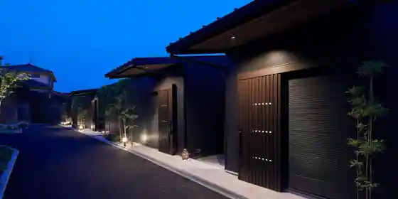
Miyajima Hanare No Yado IBUKU
Inn at Hatsukaichishimiyahama Onsen in Miyahamaonsen, Hatsukaichi with open-air baths.
庭園の宿 石亭
Teien No Yado Sekitei
Inn at Hatsukaichishimiyahama Onsen in Miyahamaonsen, Hatsukaichi.
宮島グランドホテル有もと
Miyajima Grand Hotel Ari Moto
みやじまの宿 岩惣
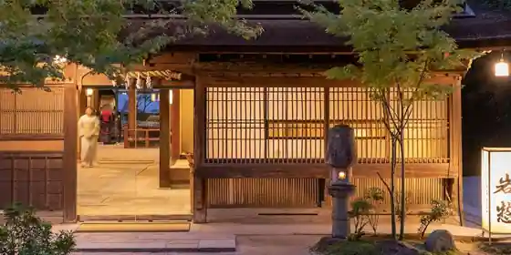
Miyajimano Yado Iwaso
いろりの湯宿 別邸藤屋
Irorino Yuyado Bettei Fujiya
Inn in Shioya, Hatsukaichi with an irori hearth dining room and a sauna.
グランヴィリオホテル宮島 和蔵
Guranvirio Hotel Miyajima Wazo
ホテル宮島別荘
Hotel Miyajima Besso
Inn at Toumiwonozomutatami Onsen in Miyajima, Hatsukaichi.
HOTEL FORK ＆ KNIFE Miyajima
HOTEL FORK & KNIFE Miyajima
宮島 錦水館
Miyajima Nishiki Mizu Kan
Inn in Miyajima, Hatsukaichi with a large communal bath.
安芸グランドホテル
Aki Grand Hotel
厳島いろは
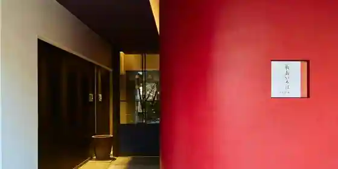
Itsukushima Iroha
そらいろ宮島～SORAIRO～
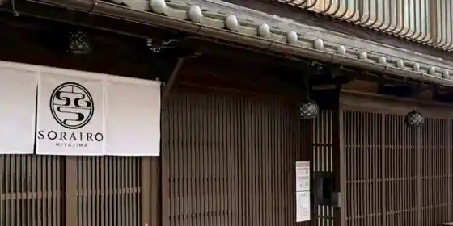
Sorairo Miyajima ~SORAIRO~
Inn in Miyajima, Hatsukaichi with open-air baths and a renovated traditional house.
Dining
AKAI
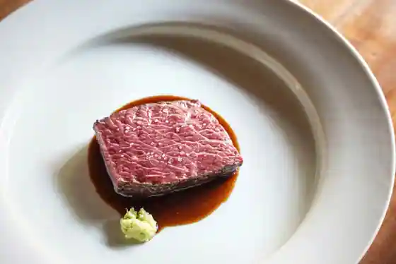
AKAI
CHILAN
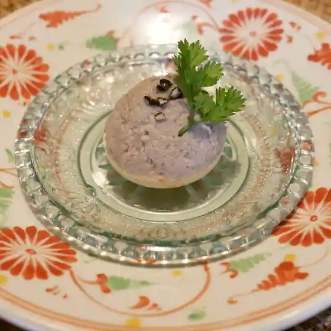
CHILAN
焼がきの はやし
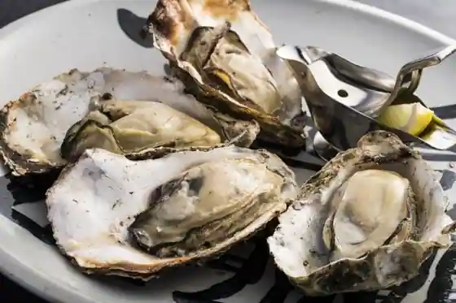
Yaki Gakino Hayashi
あなごめしうえの 宮島口本店
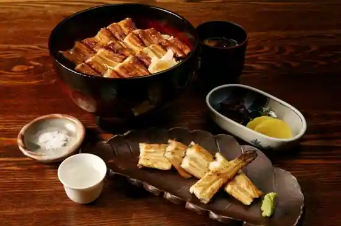
Anagomeshiueno Miyajima Kuchi Hon
紅葉堂 本店
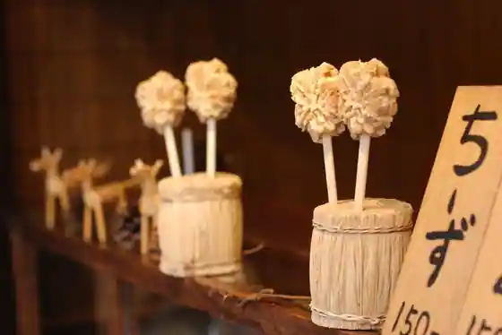
Koyo Do Hon
天扇
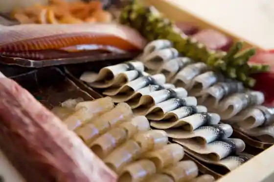
Ogi
岩村もみじ屋
Iwamura Momiji Ya
紅葉堂弐番屋
Koyo Do Ni Banya
牡蠣屋
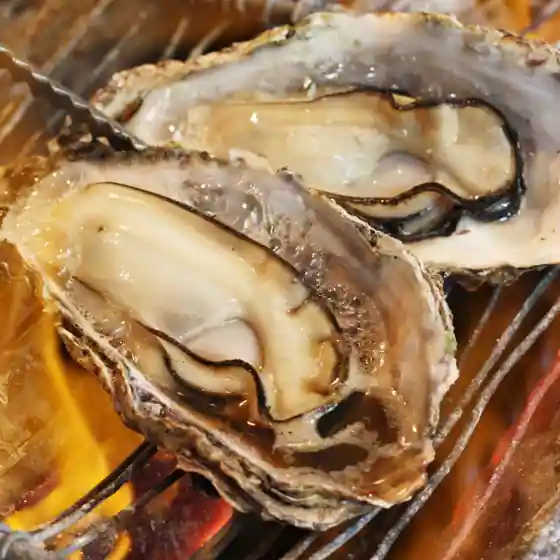
Kaki Ya
博多屋
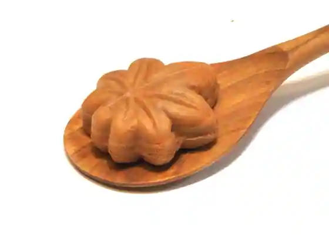
Hakata Ya
みこと屋
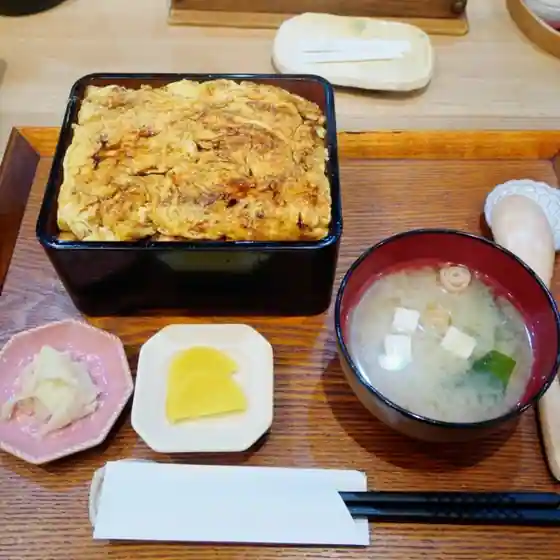
Mikoto Ya
ふじたや
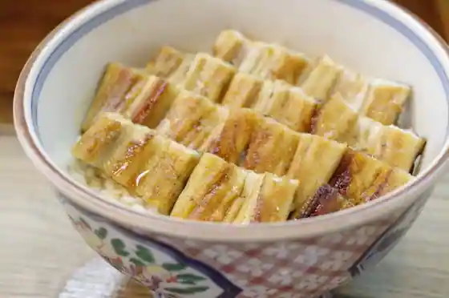
Fujitaya
錦水館
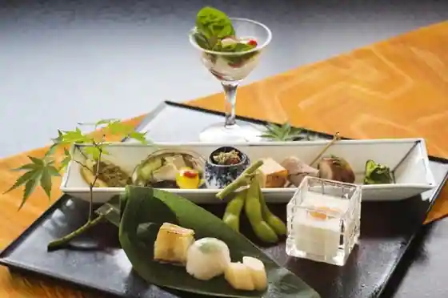
Nishiki Mizu Kan
他人吉
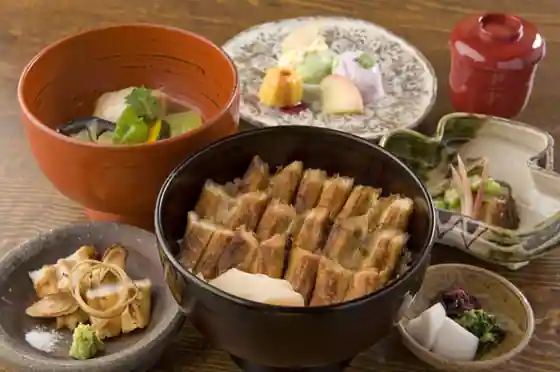
Tanin Kichi
GEBURA
GEBURA
みやじま達磨
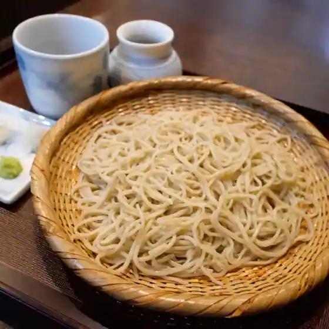
Miyajima Daruma
宮島珈琲
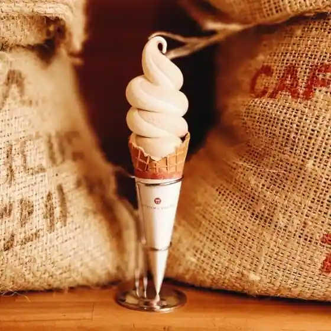
Miyajima Coffee
まめたぬき
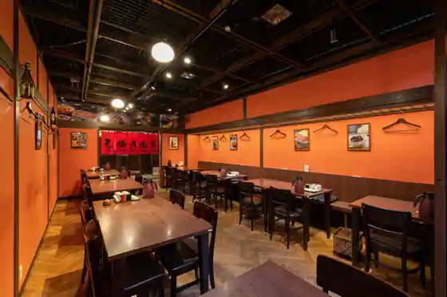
Mametanuki
いな忠
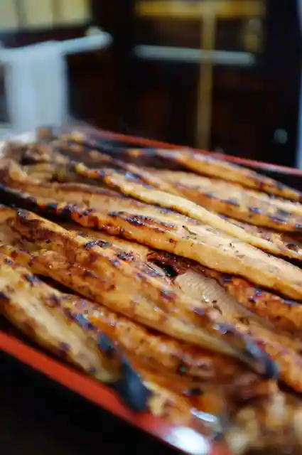
Ina Tadashi
あなごめし 和田
Anagomeshi Wada
天心閣
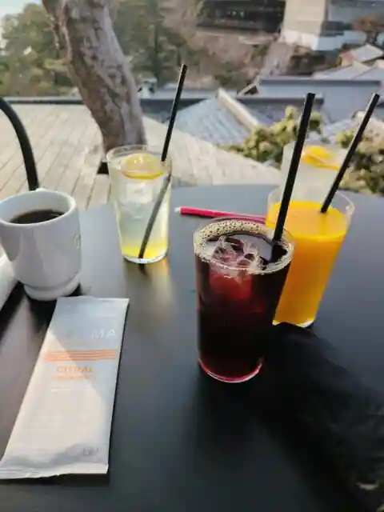
Tenshin Kaku
Sights
Itsukushima Shrine

Itsukushima Jinja Otorii

Goju to

Autumn Leaves Tani Park

Misen